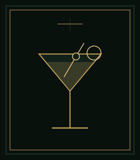

Kiemelt tétel az itallapról
Koktél betöltése...

Hozzávalók
- Alapanyagok betöltése folyamatban...
Elkészítés
Válassz egy italt a recepttárból vagy használd a készletszűrőt a részletes elkészítési leírás megtekintéséhez.